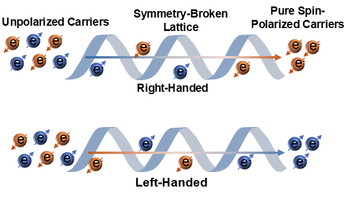
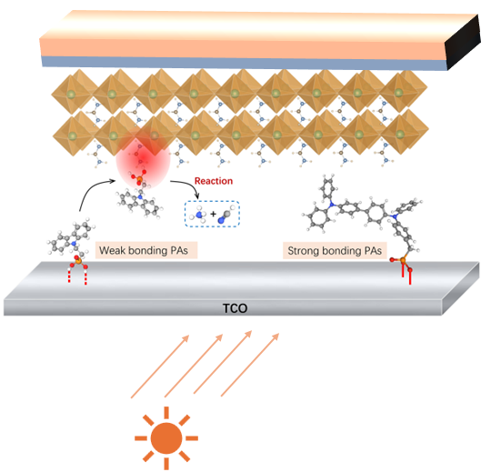
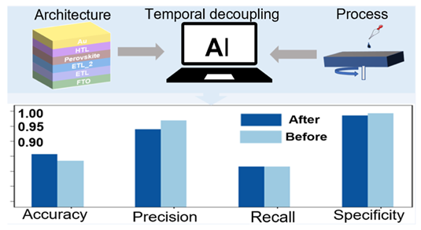
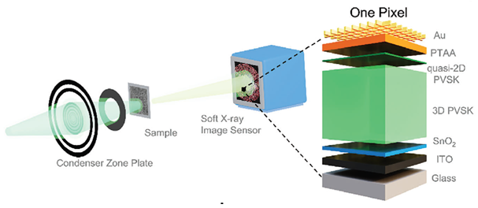

01. Scalable Photovoltaics & Advanced Interface Engineering
To solve the efficiency and operational stability limits of perovskite solar cells, our program engineers materials across multiple interfaces and crystallization stages. By preventing interfacial chemical degradation with molecular monolayers, designing selective carrier transport layers, and passivating grain boundaries, we suppress defect recombination to build high-efficiency, durable photovoltaic devices and modules.

02. Symmetry-Broken Semiconductors for Spin-Optoelectronic Logic
To control carrier spin and polarization without magnetic fields, our program exploits strong spin-orbit coupling in low-dimensional semiconductors with broken spatial inversion symmetry. By investigating symmetry breaking across molecularly induced chiral frameworks and deterministic helical crystals, we uncover the quantum transport physics of the Chirality-Induced Spin Selectivity (CISS) effect, bulk spin splitting, and helicity-dependent optical selection rules to construct high-mobility, room-temperature spintronic and optoelectronic logic.

03. Optoelectronic Sensors & Detection Devices
Our program develops wide-bandgap and oxide semiconductors for high-sensitivity optical and chemical detection. By combining low-temperature thin-film processing with nanostructure engineering, we suppress defect leakage to build ultrafast solar-blind deep-UV photodetectors and sensitive chemical sensing platforms.

04. Data-Driven Optimization & Machine Learning
To eliminate empirical trial-and-error in materials design, our program integrates predictive machine learning with experimental workflows. By decoupling multi-step fabrication parameters to forecast device efficiency and applying Bayesian optimization to closed-loop synthesis, we establish data-driven platforms for accelerated semiconductor discovery.